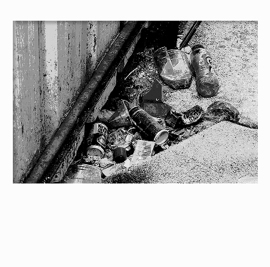
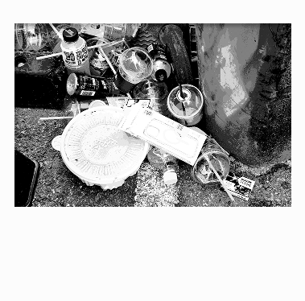
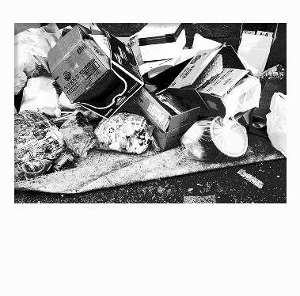
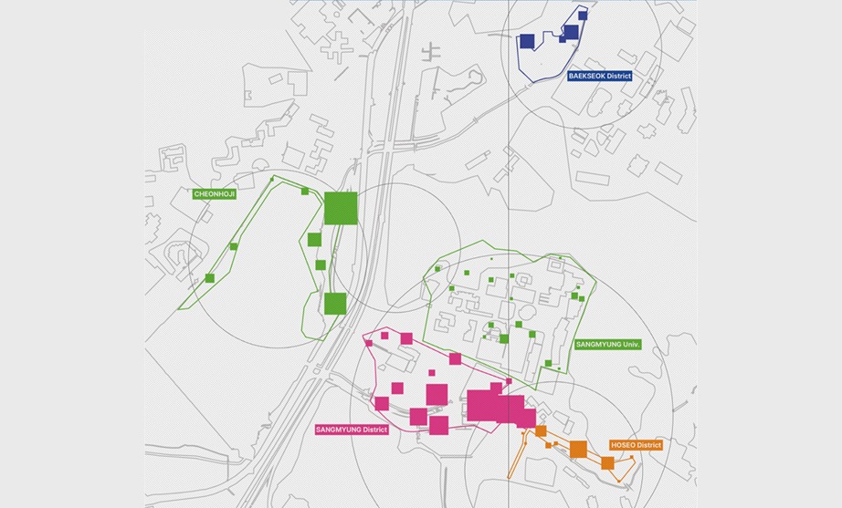
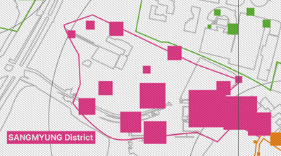

01.
우리는 왜 안서동 바닥을
뒤지기 시작했나


우리는 매일 안서동을 걷지만, 발밑의 세계를 읽지는 않는다. 5개의 대학이 밀집한 안서동의 쓰레기는 이곳을 향유하는 학생들의 라이프스타일과 시간의 흐름을 가장 솔직하게 담아내는 매개체다.
WHY?
이를 위해 안서동을 5구역으로 나누어 현장을 조사하고 공간별 쓰레기 분포를 추적했다. 채집된 폐기물들은 시각적 데이터로 박제되어, 안서동의 지리적 특성을 증명하는 새로운 기록물로서의 가치를 갖게 된다.
우리가 안서동의 구석구석을 뒤지기 시작한 이유는 단순히 오물을 기록하는 것을 넘어, 그 속에 숨겨진 조형적 패턴을 통해 안서동만의 지역적 정체성을 재발견하고 싶었기 때문이다.



02.
5구역으로 나눈 안서동
우리는 안서동의 지역적 정체성을 정밀하게 들여다보기 위해,
학생들의 발길이 가장 밀도 높게 머무르는 5개의 핵심 구역을
선정했다.


상명대 상가
가파른 경사를 따라 형성된 독특한 지형만큼이나, 그 상권을 이용하는 이들의 개성 있는 라이프스타일이 고스란히 묻어나는 파편들을 채집했다.